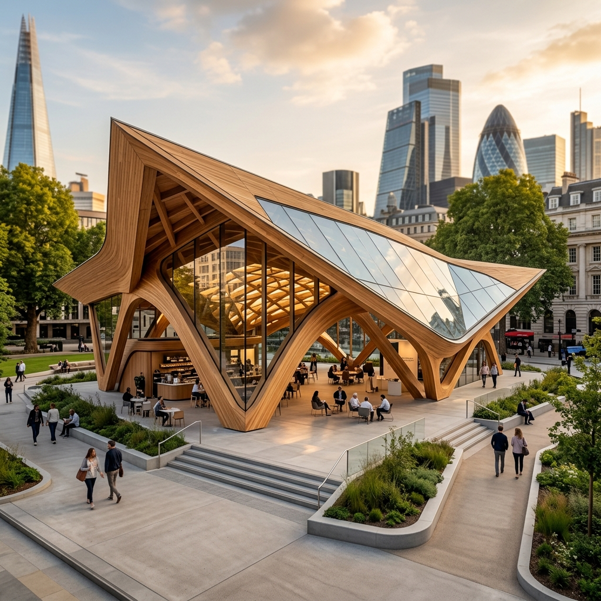

Urban Canopy
Type Public Space
Location London, UK
Year 2026

The Urban Canopy acts as a wooden oasis in the center of a bustling glass and steel metropolis. The swooping, parametric geometries of the wooden truss roof create a welcoming public environment.
Equipped with a public cafe and seating step-downs, the pavilion integrates immediately with the street level. It serves as both a sculptural landmark and a functional, shaded sanctuary for the public.